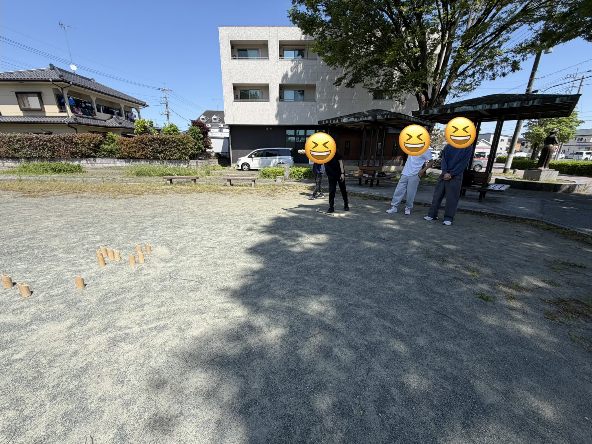
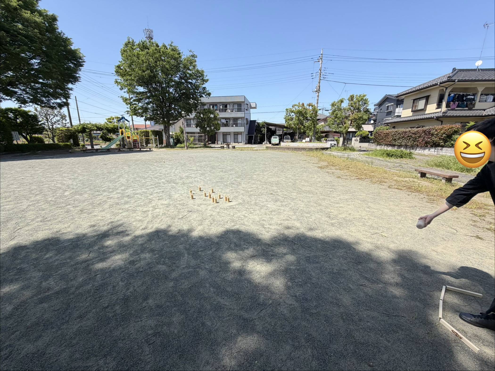

5月3日、10日、13日、20日に中通公園で参加希望者向け体験会を行いました！ この体験会でmölnに新たに17名のメンバーが加入し、合計37名となりました！新入生の皆さん、これからよろしくお願いいたします！ モルックサークル「möln」では随時加入受付中です！加入希望者は公式InstagramのDMまでお願いいたします！（本サークルでは加入条件として１回以上の体験会参加を必須としております。ご理解よろしくお願いいたします。） ※写真は5月10日のものです。

